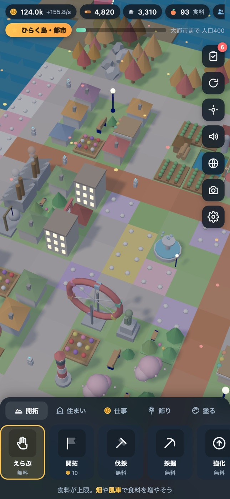
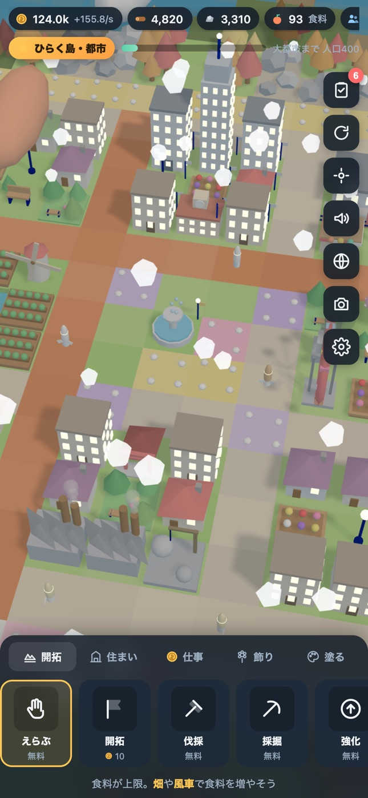
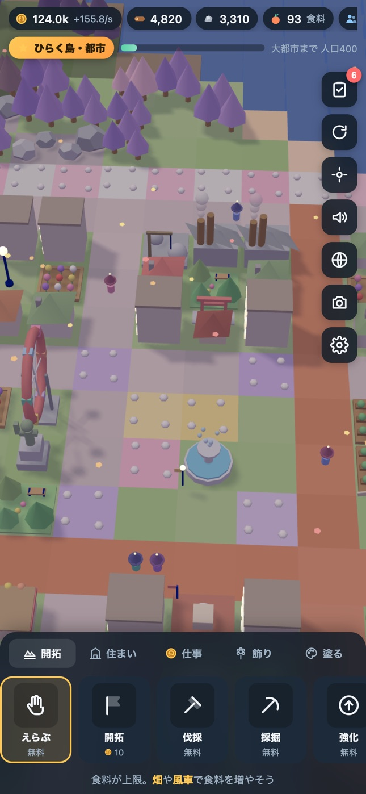
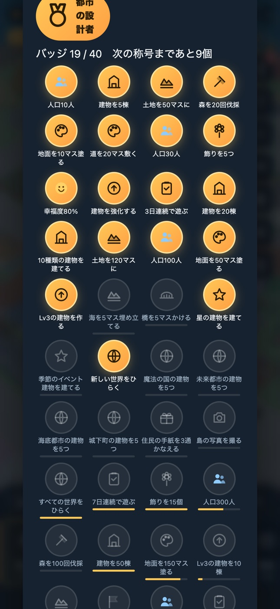

1日5分。開いて、建てて、塗って、閉じる。閉じている間も島は育つ。
森を伐採して材料を集め、家と畑で人口を増やす。集落・村・町・都市・大都市と5段階で発展し、建てられるものが増えていく。
草・砂・道・石畳・レンガ・花6色・雪・池。指でなぞって一気に塗れる。「どうぶつの森」のように、街の見た目を自由にデザインできる。
連続ログインボーナス、日替わりの「おねがい」、住民からの手紙、40の目標とバッジ、称号。月曜には先週のふりかえりが届く。
星を集めて、魔法の国・和風の城下町・未来都市・海底都市・空中都市をひらく。空の色も住民の姿もBGMも、世界ごとに変わる。
実際の日付で春夏秋冬。桜の花びら、夏のホタル、落ち葉、雪。季節限定の建物とおねがいがある。
街の名前・人口・称号の帯つきで島の写真を保存・共有。2×2マスの大型建物や橋で、見栄えのする街が作れる。
横にスクロールして見られます。




建てたものは世界を切り替えても残る。同じ島を、違う空の下で眺められる。
アプリのインストールは不要。ホーム画面に追加すると全画面で遊べる。
Web の標準技術だけで作った、1ファイル完結の3Dゲーム。
| 本体 | HTML 1ファイル（約165KB）。CSS・JS・SVGアイコンをすべて同梱。外部依存は three.js のみ |
|---|---|
| 3D描画 | three.js（WebGL）。地面・水・木・岩・花は InstancedMesh、建物50種以上はプリミティブの組み合わせで生成。影・昼夜・霧・粒子 |
| 音 | 効果音とBGMは WebAudio でその場で生成。音源ファイルなし。BGMは世界ごとに音階・テンポ・音色が変わる |
| データ | localStorage に端末内保存。サーバー通信なし。文字列で書き出し・読み込みして機種変更に対応 |
| PWA | manifest + Service Worker でホーム画面追加・オフライン起動 |
| iOS アプリ | Capacitor でラップ。触覚フィードバックとローカル通知をネイティブで実装 |
| 公開 | GitHub Pages。ソースコードはすべて公開 |